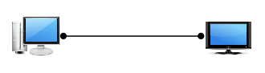
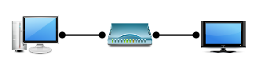
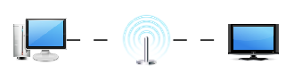

This page will briefly describe the steps to take to install LXiMediaCenter.
LXiMediaCenter always transcodes (i.e. decode and encode) media, even if it is already in a compatible format, this means the minimum processor requirements are relatively high. The processor needs to support at least SSE2 and it is not recommended to use systems with less than 512Mb of RAM. It is recommended to use a modern dual core processor or better for optimal user experience. Video encoding is performed at a high bit-rate for high image quality, therefore it is recommended to use a cabled network or a modern wireless network (802.11n).
First, obtain and install the package for the used operating system. After installation, the backend will be started and can be managed through its web interface at address http://localhost:4280/ or through the provided frontend.
There are several options to connect a DLNA device, please consult the manual of the DLNA device for an overview of all options that are available. A few generic options are discussed below.
Direct connection |
Home network |
Wireless |
Network over powerline
|
In case a firewall is enabled on the PC, it needs to be configured to allow the backend to communicate with DLNA devices. On Windows systems, the default Windows firewall is automatically configured by the installer. For other firewalls, please consult the manual of the firewall software for details on how to configure it. The backend receives incoming HTTP requests on port 4280 and receives and multicast SSDP messages to/from 239.255.255.250:1900.
The directories that are published can be selected from the settings page in the “Media player” field, all media files in the selected directories and sub-directories will become visible. By default, the backend (lximcbackend) runs as a restricted user. On Linux the user and group “lximediacenter” are created during installation for this purpose, on Windows the “Local Service” user is used. This means that all files that need to be accessed need to be accessible by this user. On Linux this can be done by setting the read permission for “other” users on the files and directories that need to be accessed by the backend. On windows this can be done by adding “Everyone” with the read permission set to the files and directories that need to be accessed by the backend.
For maximum compatibility only DVD quality video with stereo sound is enabled by default, High Definition video and surround sound can be enabled from the settings page in the “DLNA” field. Note that higher settings require more CPU power and more network bandwidth. The “Letterbox” setting will add black bars to the image if the aspect ratio does not match, whereas the “Fullscreen” setting will zoom in and cut off part of the image. The “High quality” setting will use more CPU power but gives higher quality images than the “Fast” setting.
There are two separate transcode settings for music. For example, the “4.0 Quadraphonic” setting can be used to duplicate the front channels to the rear channels. Furthermore, the “Add black video” setting can be used to add a video stream with black images to simulate that a TV is switched off (audio only).